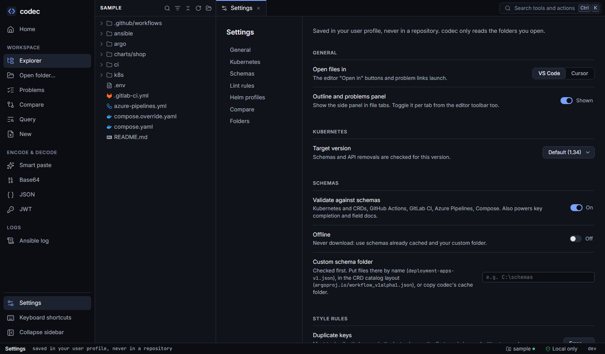

Settings and your data
All settings are in one place (Ctrl ,). They live in your user profile — never in a repository — and the CLI shares them.

What you can set#
| Section | Settings |
|---|---|
| General | The editor "Open in" launches (VS Code or Cursor); whether file tabs show the outline and problems panel. |
| Kubernetes | The target version (1.30–1.37) for schemas and API removals. |
| Schemas | Validate against schemas on or off; offline mode; a custom schema folder. See Lint and schemas. |
| Lint rules | The level of every rule (error, warning, info, off) and the line-length limit. |
| Helm profiles | Saved profiles of every chart, by folder. Forget one profile, or all of a chart that no longer exists. |
| Compare | Paths semantic diffs ignore. |
| Folders | Where codec keeps its files (below), each with a copy button; forget the recent folders list. |
Changes apply at once to the editor, the Problems view, Helm output and the next CLI run.
Where codec keeps files#
| What | Windows | macOS | Linux |
|---|---|---|---|
| Settings file | %AppData%\codec\settings.json | ~/Library/Application Support/codec/settings.json | ~/.config/codec/settings.json |
| Personal starters | %AppData%\codec\templates | …/codec/templates | ~/.config/codec/templates |
| Schema cache | %LocalAppData%\codec\schemas | ~/Library/Caches/codec/schemas | ~/.cache/codec/schemas |
| Sample repository | %LocalAppData%\codec\sample | ~/Library/Caches/codec/sample | ~/.cache/codec/sample |
CODEC_CONFIG_DIRmoves the settings folder (and starters with it) — useful to share lint rules with CI or to keep a portable setup.- In Docker, these live under
/home/nonroot; mount a volume there to keep them. - The settings file is written atomically; if it is ever corrupt, codec starts with defaults and says so, and the next save replaces it.
What your browser keeps#
Display preferences stay in the browser's local storage: open tabs, panel sizes, the sidebar state, expanded folders, the last route, the editor link choice. Clearing site data resets them; nothing else is lost.
What codec never stores#
- Anything pasted into the tools (it may hold secrets).
- What-if edits, what-if parameters and Compose variables — they last until you reset or close the tab.
- Anything about your repositories beyond their paths in the recent list and your Helm profiles.